Web-Research
Er googelt nicht wild herum — er sammelt Lage, Wettbewerb und Saison zum Haus und legt sie als Briefing ab, damit niemand das Gespräch bei null beginnt.
✓ liveVibe Coding heißt nicht, jede Zeile tippen zu können. Es heißt, klar genug zu wissen, was du willst, dass eine Maschine es baut. 86 Tage lang übe ich genau das — und zeige, wie's läuft.
Diese Seite ist mein Skizzenbuch — wie aus Worten lauffähige Software wird. Ich tippe nicht jede Zeile selbst; ich sage klar, was entstehen soll, und prüfe, bis es stimmt. Seit drei Jahren probiere ich das mit ChatGPT, Lovable, Supabase, Claude Code. Das Bootcamp macht aus dem Ausprobieren ein Handwerk.
Die erste Session war neu und ziemlich motivierend — sauber aufgesetzt, klar strukturiert, kein Leerlauf. Man merkt: hier wird das Handwerk ernst genommen. Sauber aufgesetzt, keine Show.
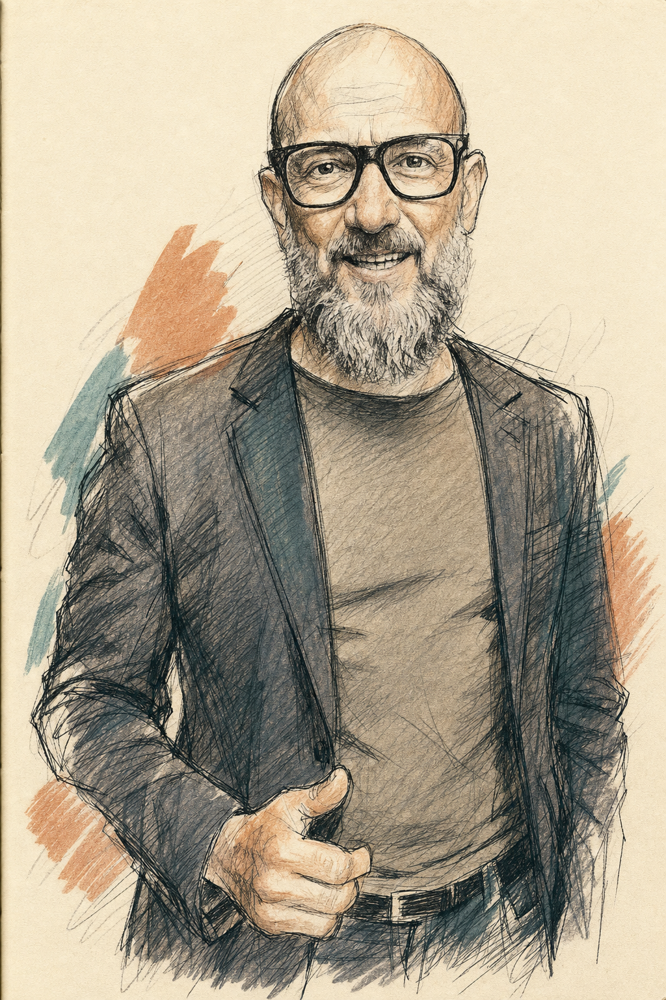
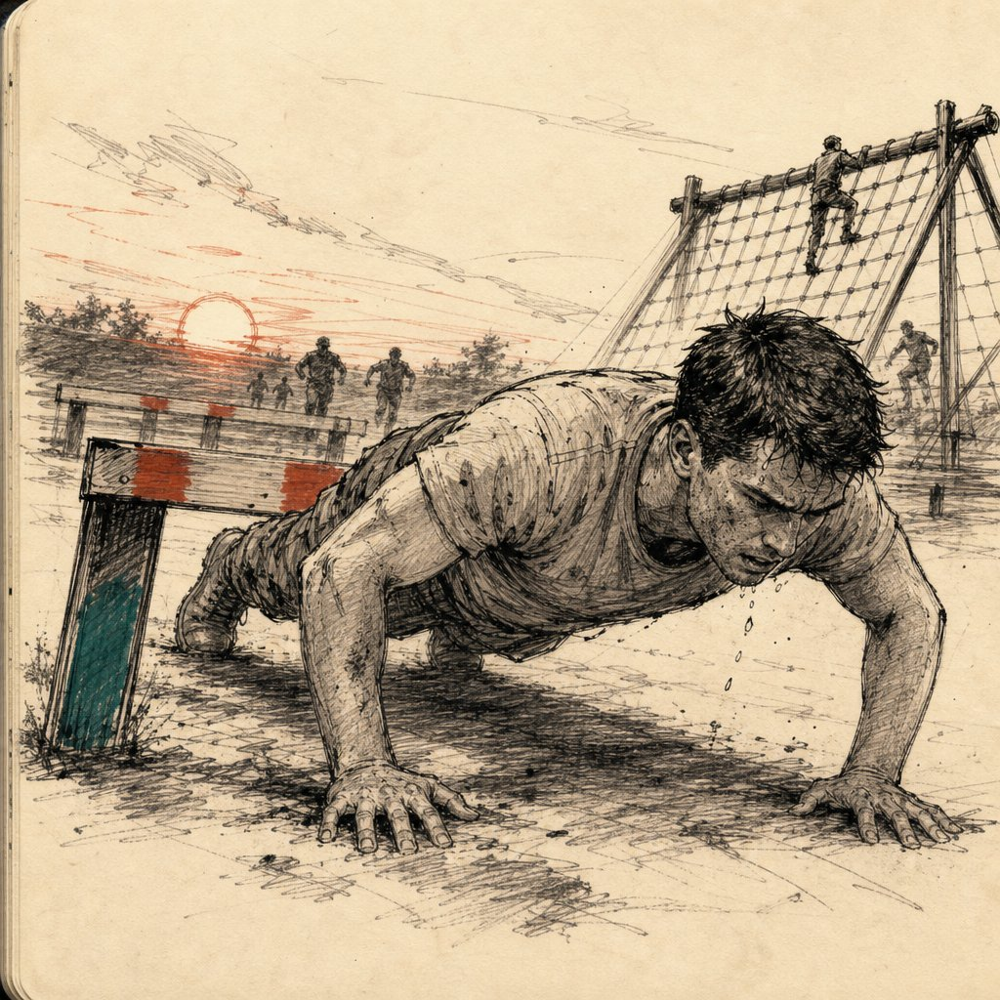
Erste Session, die Vorstellungsrunde. „Wer von euch kann coden?" — die Finger gehen hoch. Meiner nicht. Zwanzig Jahre Tresen, null Zeile Code. Genau da fing es an.
Es geht nicht ums Tippen. Es geht ums Denken. Klarheit ist der Skill — nicht Syntax.
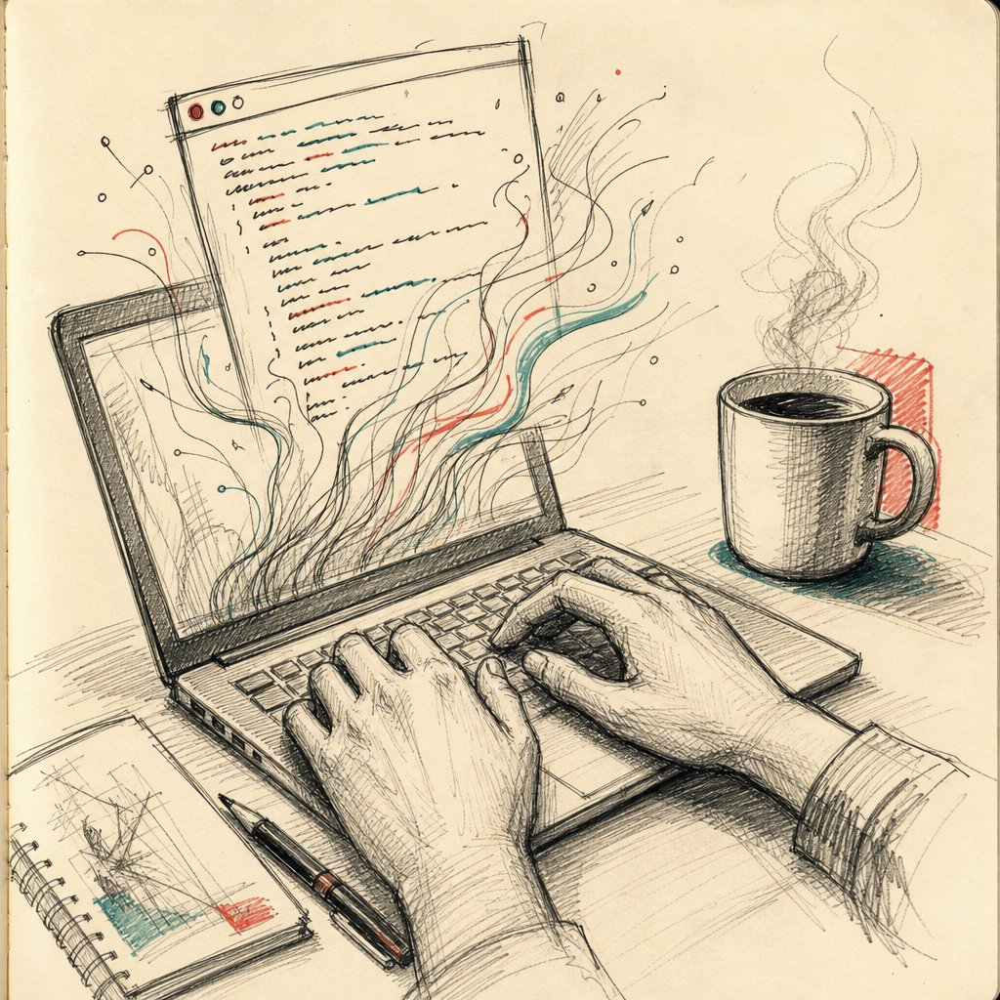
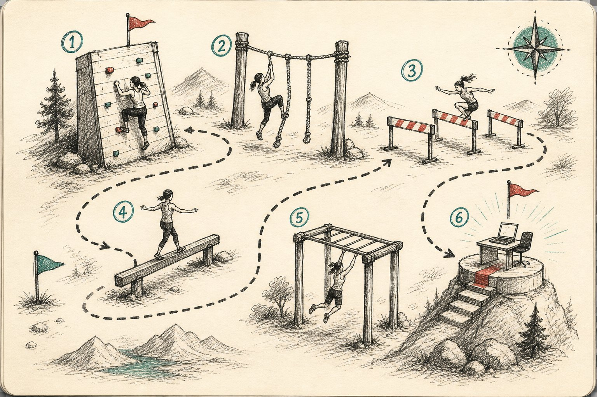
Hier bin ich gerade. Genau mein Hebel: erst klar denken, dann präzise sagen — der Kern vom Vibe Coding.
Mein Vorsprung aus 20 Jahren Prozessdenken — hier zahlt er sich aus.
Trainer von Zalando, XING, SumUp und OTTO. Inklusive Ticket für den DL Summit — Deutschlands führende Tech-Konferenz.
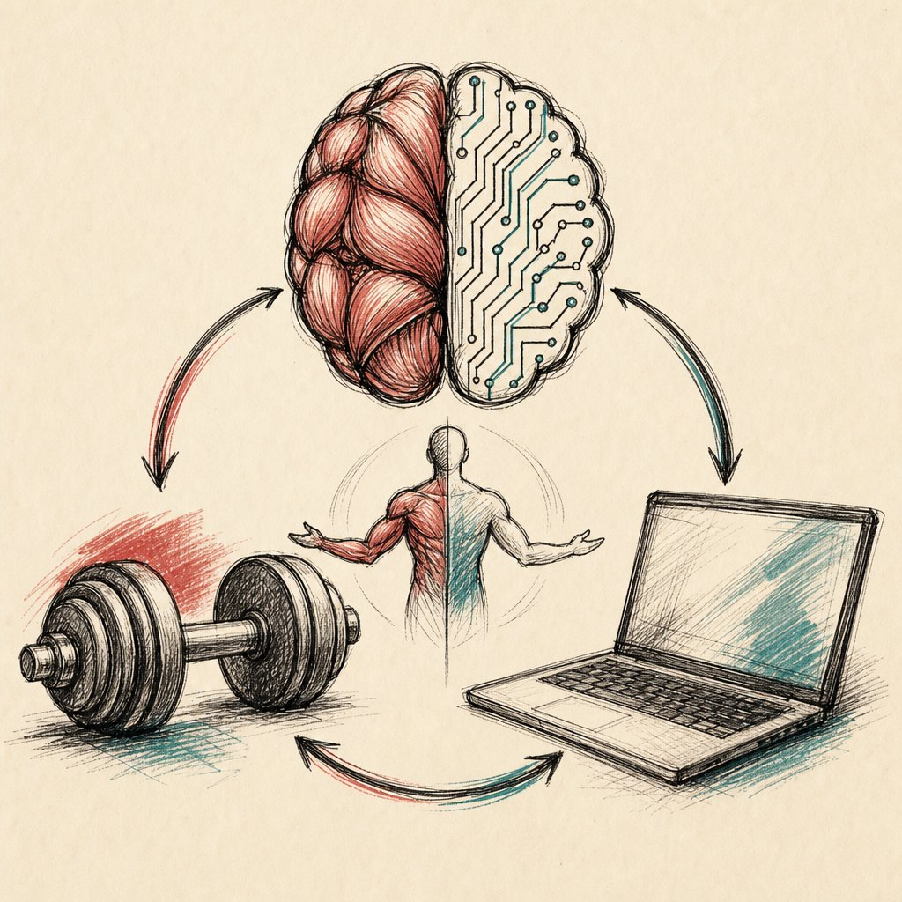
Von Malta bis zum Nordkap, von der Kölsch-Kneipe bis zum VIP-Service: zwanzig Jahre habe ich Bars am Laufen gehalten. Fünf Eröffnungen begleitet, spektakuläre Abende, wahnsinnige internationale Gäste, Events, die man nicht vergisst. Wer das durchhat, denkt danach in Abläufen — nicht in Lehrbuchkapiteln.
Geblieben ist genau diese Brille: in Engpässen denken, den einen Schritt finden, der hakt. Die setze ich beim Coden wieder auf — erst verstehen, wo's klemmt, dann bauen. Das Werkzeug ist neu, die Herangehensweise nicht. Nur abends mixe ich keine Cocktails mehr.
Solutions Engineer oder Customer Success Manager bei einer Hospitality-SaaS im DACH-Raum. Jemand, der Kunden nicht nur betreut, sondern ihre Prozesse versteht und mit n8n, Automation und AI-Agents wirklich löst.
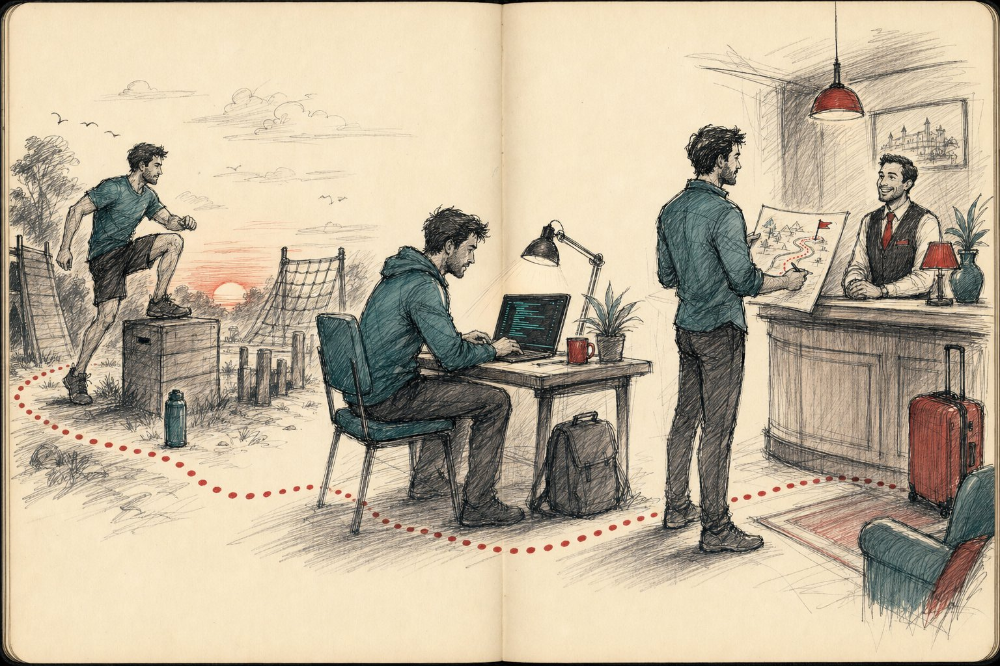
Du redest über deinen Betrieb. Acht Agenten machen daraus einen Fahrplan — Abteilung für Abteilung. Scroll los.
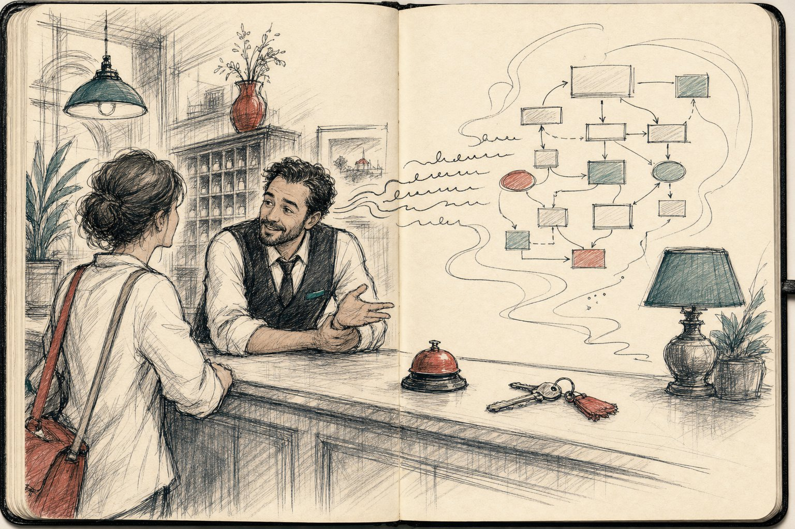
Schichtübergaben, Tabellen, Bauchgefühl. Jede Abteilung weiß viel — und keiner kommt drumherum, es jemandem zu erzählen.
Jede Abteilung weiß viel, nur nutzbar ist es nicht."
Statt Felder auszufüllen, erzählst du. Ein Voice-Agent hört zu — und macht aus dem Gespräch Struktur.
Reden statt ausfüllen: die einzige Schnittstelle, die jede Abteilung schon kann — vom Empfang bis zur Küche.
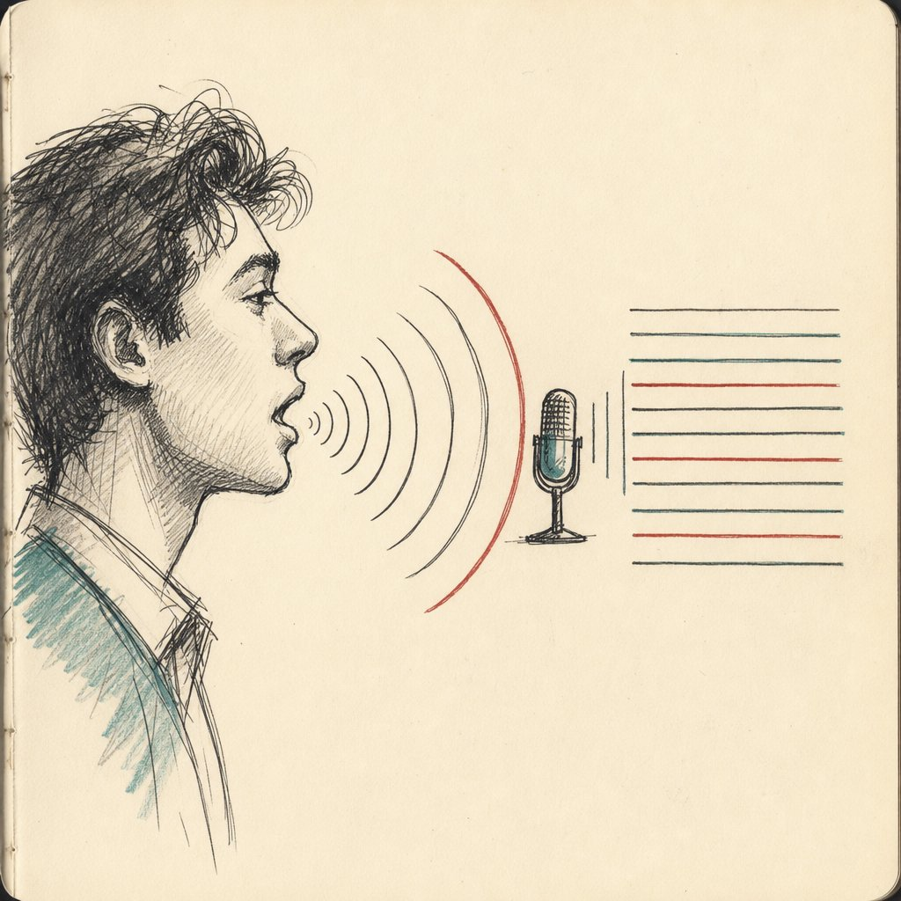
Ein Voice-Agent hört dir zu, ein Analyse-Agent liest deine Unterlagen mit. Aus beidem entsteht im Hintergrund eine saubere Datenbasis — ganz ohne dass du ein Formularfeld triffst.
Er googelt nicht wild herum — er sammelt Lage, Wettbewerb und Saison zum Haus und legt sie als Briefing ab, damit niemand das Gespräch bei null beginnt.
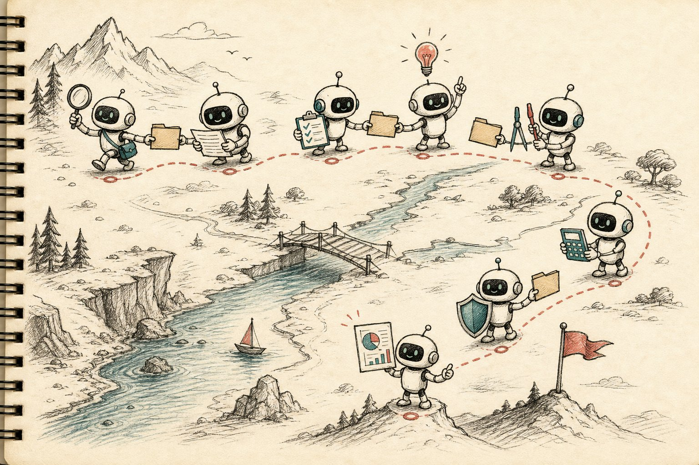
Aus dem Gespräch wird ein Briefing — und das wandert durch acht Stationen. Jede macht eine Sache richtig, dann reicht sie weiter wie einen Ordner im Staffellauf.
Ein Orchestrator verteilt die Arbeit an spezialisierte Sub-Agenten — jeder läuft im Claude Agent SDK mit eigenen Werkzeugen (Web, Dateien, MCP). Der Reporter fasst alles zusammen; passt etwas nicht, schickt der Orchestrator die Runde nochmal los. Teal = läuft, Rot = im Bau, grau = geplant.
Er googelt nicht wild herum — er sammelt Lage, Wettbewerb und Saison zum Haus und legt sie als Briefing ab, damit niemand das Gespräch bei null beginnt.
✓ liveDu wirfst ihm den PDF-Stapel hin, den sonst keiner liest. Er zieht Zahlen und Aussagen sauber heraus, sodass danach jeder sieht, was wirklich im Papier steht.
✓ liveEr geht den Betrieb Station für Station durch und markiert die Stellen, an denen Arbeit doppelt passiert oder liegen bleibt — die unbequemen, aber ehrlichen.
✓ liveStatt einer Wunschliste, die keiner abarbeitet, schlägt er wenige Use-Cases vor, die zum Haus passen — und sagt offen, womit man am besten anfängt.
Er nennt für jede Stelle ein konkretes Tool und prüft vorher, ob es DSGVO-tauglich ist — damit man nicht erst nach dem Kauf merkt, dass es nicht eingesetzt werden darf.
Er stellt Aufwand und Nutzen pro Vorschlag nüchtern gegenüber, damit am Ende eine Entscheidung steht statt eines Bauchgefühls — auch wenn das Ergebnis 'lohnt sich nicht' heißt.
Er hält fest, welche Daten wohin fließen und was DSGVO und AI-Act dazu sagen — schriftlich, damit es bei Nachfragen kein Schulterzucken gibt.
Am Ende klebt er alles zusammen, was die anderen Agenten gefunden haben, und gibt es so aus, dass man es ausdrucken und in die Runde legen kann — PDF, Excel oder Markdown.
Research · Dokumente · Prozesse · Use-Cases · Tools · Wirtschaftlichkeit · Compliance · Reporter → PDF · Excel · MD
Dieselben acht Agenten — jetzt als lebendes 3D-Werkstattfenster. Zieh dran, dreh es, klick einen Knoten.
Voice & Dokumente fließen links rein — der Orchestrator reicht Kontext an acht Fach-Agenten — der Reporter bündelt alles zur Executive Summary.
Kein Foliensatz für die Schublade. Pro Bereich eine ehrliche Empfehlung — was sich lohnt, was wartet, was du sein lassen kannst.
Standard-Mails und -Anfragen landen vorstrukturiert beim Team. Der Mensch entscheidet, die Maschine räumt vor.
hoher HebelWareneinsatz und Bestellungen sind selten so sauber, wie man denkt. Hier zuerst Klarheit, dann Tools.
Daten zuerstSchichtplanung und Statusmeldungen lassen sich ohne großes Projekt entlasten — der ehrlichste Quick Win.
Quick WinHier locken die größten Versprechen und die größten Fehlkäufe. Empfehlung: testen im Kleinen, nicht kaufen im Großen.
mit VorsichtContent, Antworten, Wiederkehr-Ansprache — der Bereich, in dem der Einstieg am leichtesten gelingt.
reif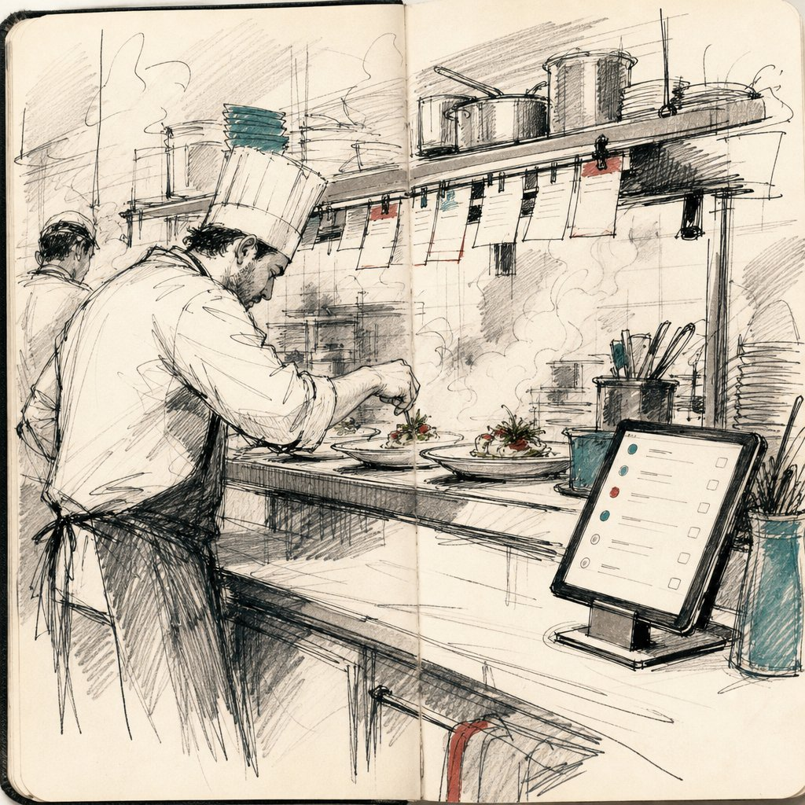
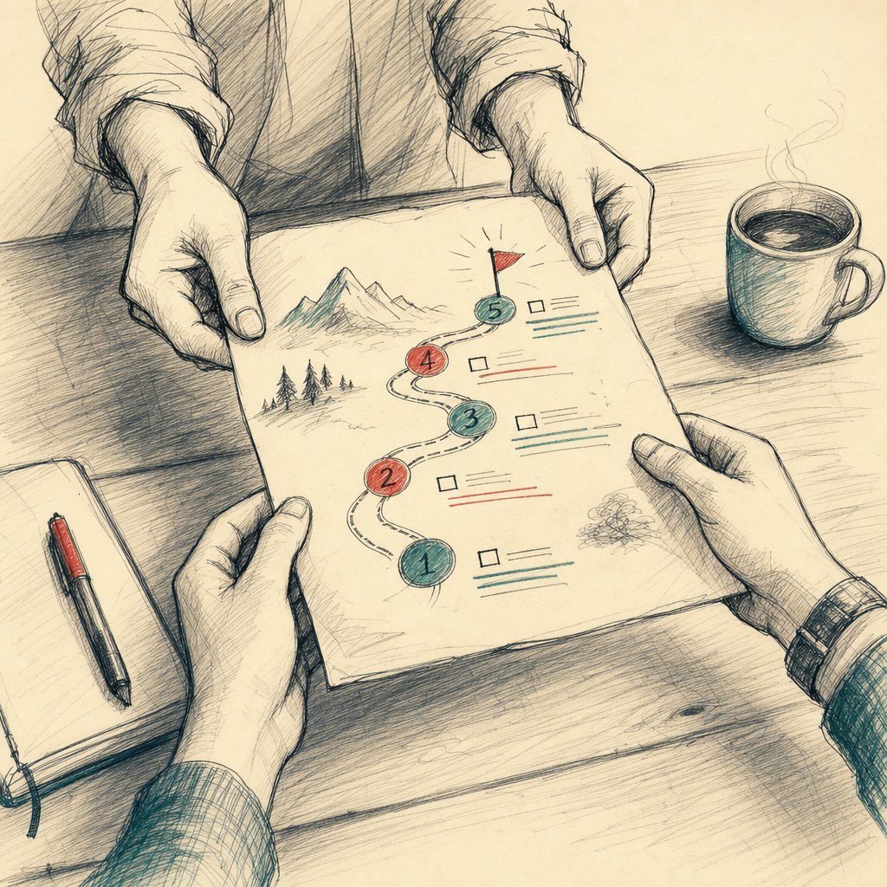
Drei Use-Cases, ein Report, ein klarer nächster Schritt. Kein Foliensatz — etwas, mit dem das Haus arbeiten kann."
Ein Klick in der Morgenmail — und ein Agent in der Cloud übernimmt die nächste Aufgabe von allein: klont das Repo, schreibt Code, prüft sich selbst und legt einen fertigen Pull-Request hin. Kein Terminal, kein Rechner an.
Leitprinzip: Linear baut, Notion denkt. Die Umsetzung lebt in Linear — Issues, Milestones, Status. Strategie und Wissen in Notion. Linear meldet nach oben, nie umgekehrt.
Und jeder Bau-Schritt wird mitgeschrieben — als Build-Log, das direkt zum LinkedIn-Post wird. Schau mir beim Bauen zu.
Vom Linear-Issue bis zum fertigen Pull-Request — vollautonom, rund um die Uhr."
Es gab keinen Plan von oben. Ich habe Stück für Stück gebaut: hier ein Skill, da eine Automation. Irgendwann fingen die Teile an, sich gegenseitig zu brauchen. Das ist der Stand, den du hier siehst — als lebende Karte. Zieh dran, zoom rein.
Die eigentliche Arbeit macht ein Agent in der Cloud — er liest, schreibt, testet und committet, ohne dass mein Rechner laufen muss. Ich gebe das Ziel und die Konfiguration vor, den Rest erledigt die Maschine.
Bei Managed Agents ist es dasselbe SDK, nur von Anthropic gehostet. Jeder Lauf passiert in einem isolierten Cloud-Container — eine eigene Werkstatt pro Aufgabe. Skalierung, der Lebenszyklus der Container und das Kompaktieren des Kontexts laufen auf Anthropics Seite. Keine Maschine, die ich selbst betreiben muss.
Das Prinzip ist Outcome statt Befehl: Ich beschreibe ein bewertbares Ziel, ein Grader prüft jeden Durchlauf und schickt ihn zurück, bis das Ergebnis passt. Schutzschienen inklusive — nur Branch und Pull Request, eingeschränktes Netz, keine Secrets im Container.
Das Claude Agent SDK ist Anthropics Framework, um eigene Agenten zu bauen — in Python oder TypeScript. Darunter läuft derselbe Agenten-Loop wie in Claude Code, nur programmierbar statt im Terminal. Ich gebe dem Agenten eigene Werkzeuge an die Hand — Bash, Dateizugriff, Web — dazu MCP-Server, Subagenten und klare Rechte in einer Sandbox.
Drei Dinge, ein Zusammenhang: Claude Code ist das Werkzeug, mit dem ich täglich arbeite. Das Agent SDK ist der programmierbare Unterbau darunter. Managed Agents sind dasselbe SDK — nur von Anthropic gehostet, im eigenen Cloud-Container. Genau diese Kette steckt im Studio.
„Das Programm ist mit dem KI-Auditing nicht vorbei — danach fängt das Ganze erst richtig an." Strategische KI-Adoption heißt: verstehen, designen, bauen. Branchenagnostisch gedacht — das Hotel ist nur der erste Anwendungsfall.
Voice-Agent und Dokumenten-Analyse erfassen die ganze Ist-Infrastruktur und die Bedürfnisse eines Betriebs.
heute liveAus den Bedürfnissen wird die komplette Ziel-Systemlandschaft abgeleitet: welche Tools, wie verbunden, welche Automationen.
als NächstesDie entworfenen Systeme tatsächlich aufbauen und alle Tools miteinander verbinden — hier liegt der eigentliche Wert.
als NächstesLauffähig ist Ebene 1: ein klickbarer Audit-Flow. Ebene 2 und 3 stehen als Prototyp daneben, noch nicht fertig.
jetztMulti-Tenant, zahlende Häuser, Billing, Production-Hardening — die volle Tiefe von Ebene 2 und 3.
danachGeplant über beide Horizonte: 76 Stories, 40 Aufgaben, ein kritischer Pfad — der Bauplan steht."
Kein Mockup — gebaute Oberflächen aus dem Studio. Next.js · FastAPI · Supabase, live auf dem VPS.
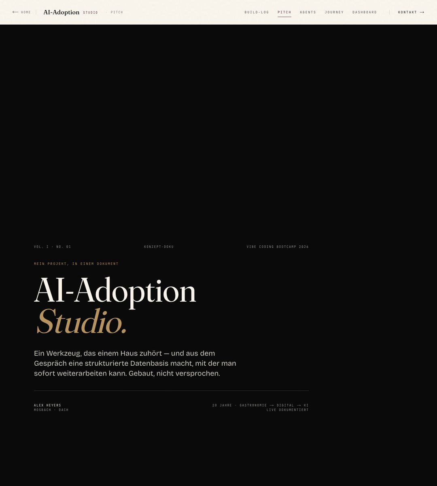
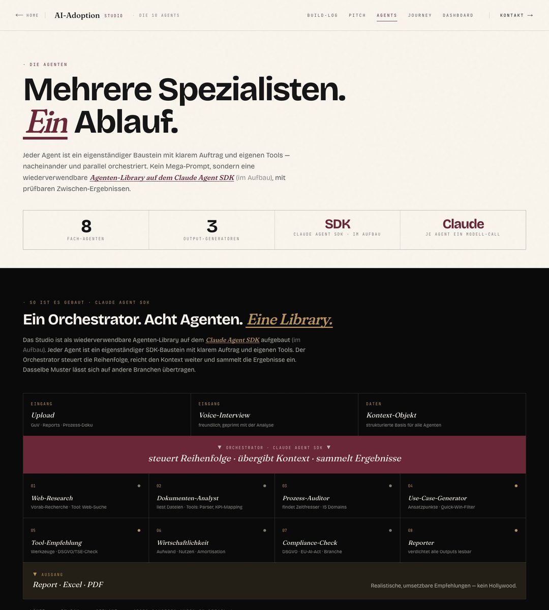
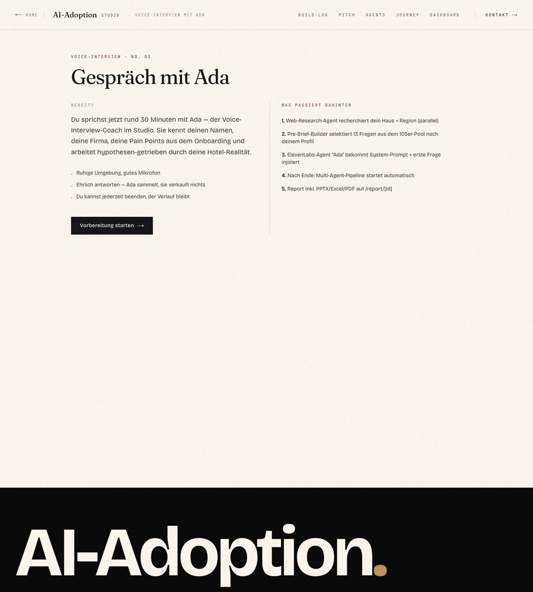
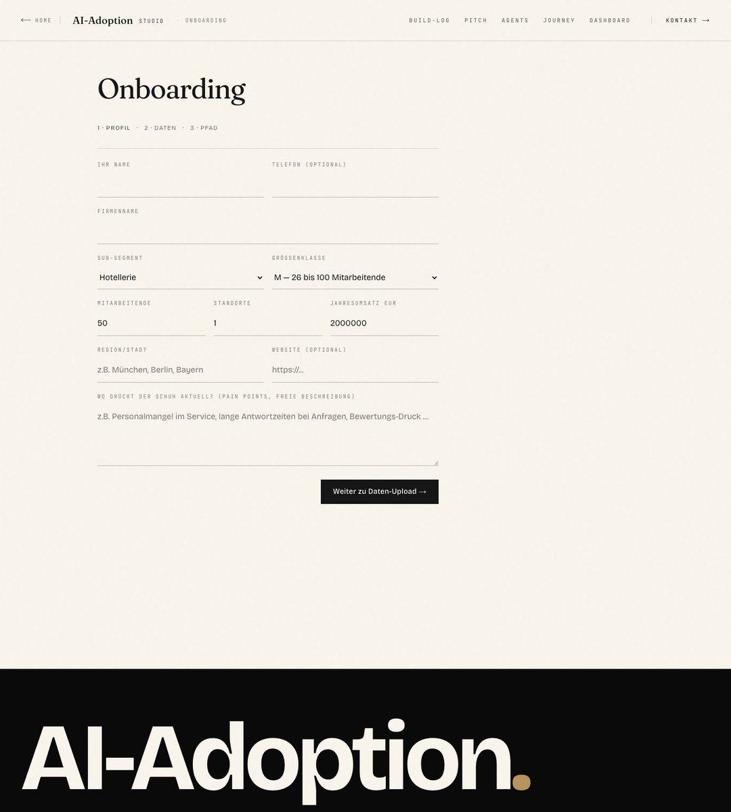
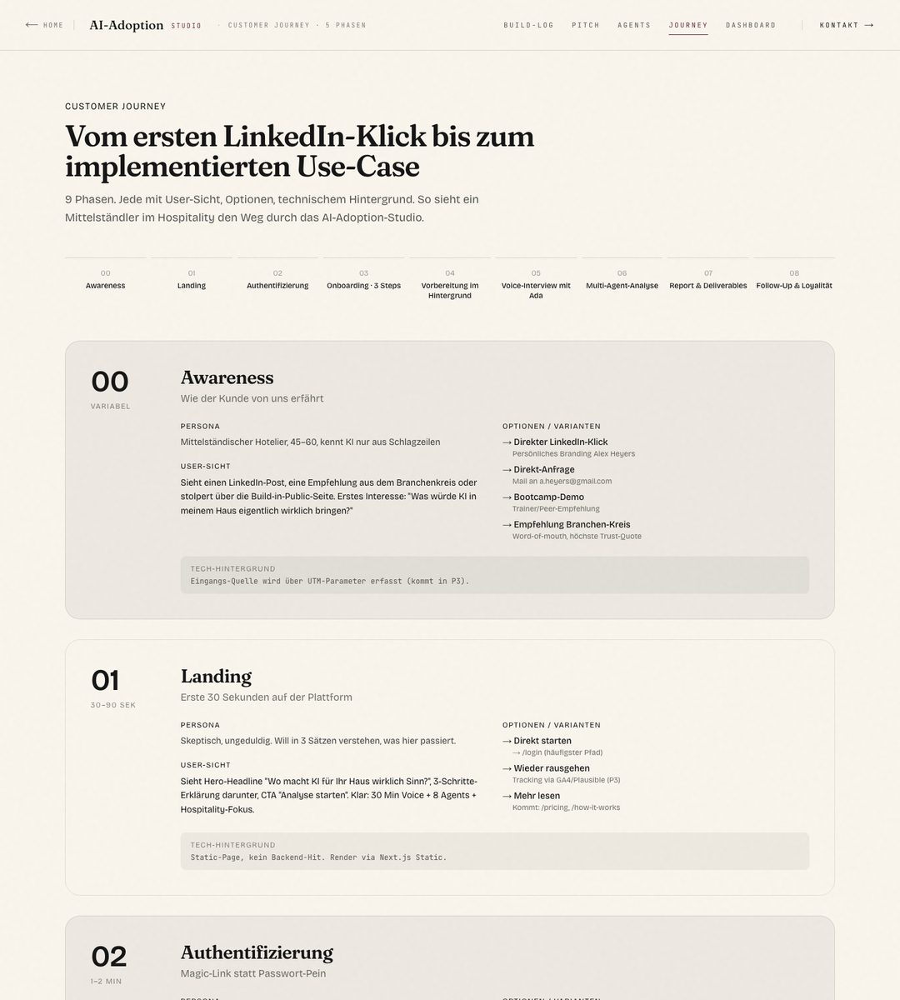
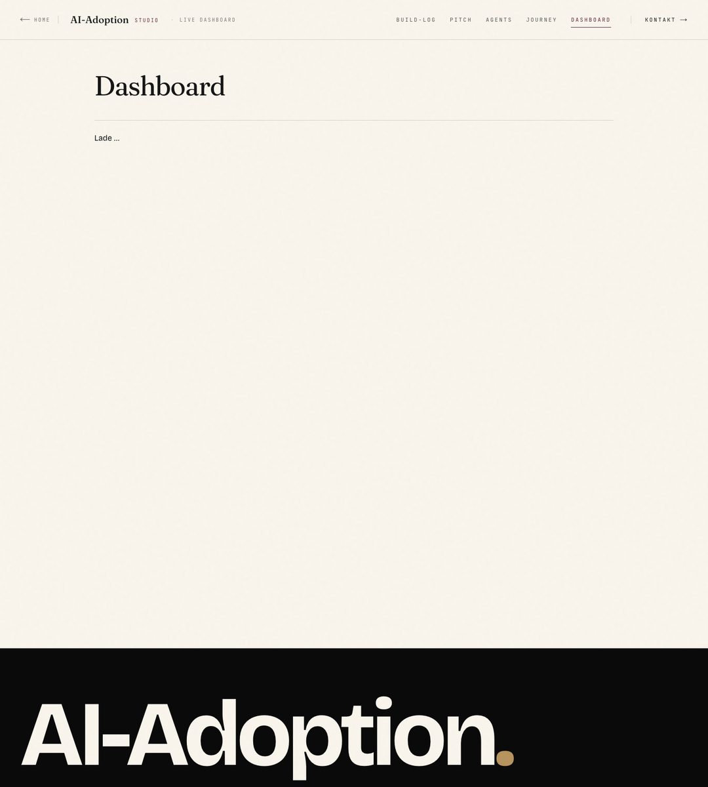
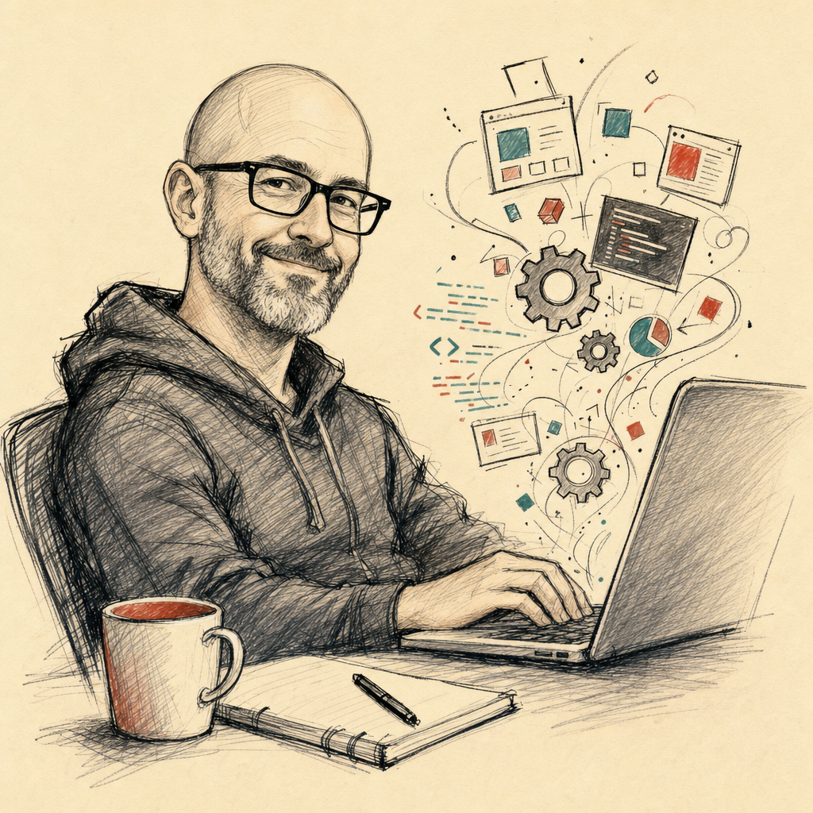
Mich packt der Weg: aus einem klaren Gedanken etwas Echtes formen, das vorher nicht da war. Coden ist dabei kein Selbstzweck, sondern die kürzeste Strecke von der Idee zum Laufen. Zwanzig Jahre habe ich Betriebe am Laufen gehalten — dieselbe Denke, nur mit anderem Werkzeug.
Mit 45, Vater seit 2025, nochmal tief eintauchen? Klar — Neugier hat kein Verfallsdatum. Und ehrlich: Bauen macht süchtig. Wenn dich dieser Weg auch reizt: Lass uns reden.
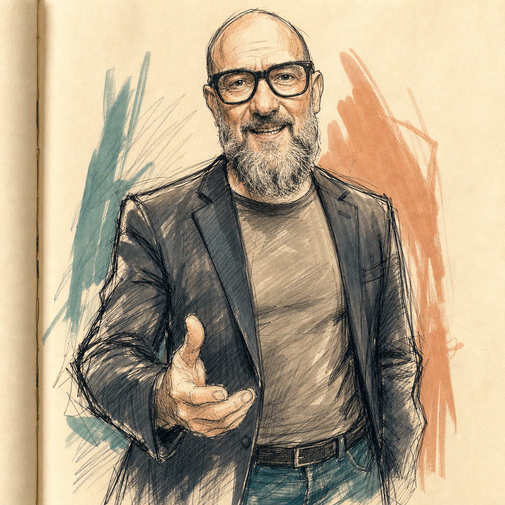
86 Tage, ein Satz: Ich bau das. Angefangen beim Gastgewerbe, weil ich die Abläufe dort kenne — aber das Prinzip (zuhören, verstehen, das passende System bauen) trägt überall.
Ob Hotel, Handwerk, Kanzlei oder Agentur — wenn dich der Weg interessiert oder du jemanden suchst, der ihn geht: schreib mir. Antwort meist in 24 Stunden.
a.heyers@gmail.com →